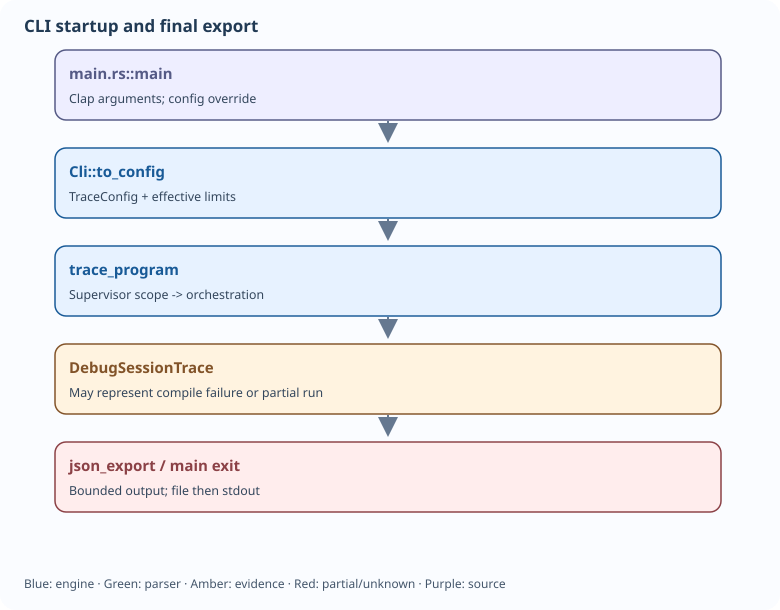
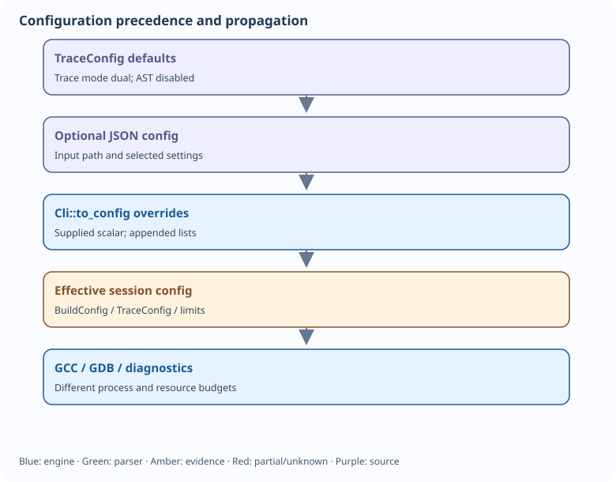
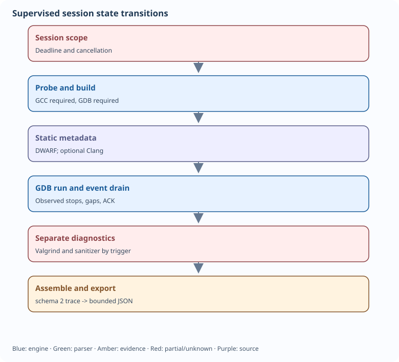
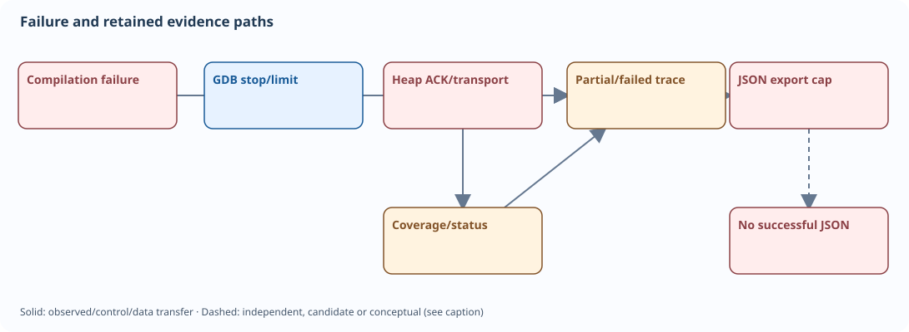

22 · Engine entry, configuration, and errors #
Key terms #
| Term | Meaning |
|---|---|
| CLI | Command-line interface: the flags and file names you pass when starting c-trace-engine. |
| Configuration precedence | The rule that decides who wins when a CLI flag and a config-file value set the same thing. |
>
The big picture #
The executable is a thin adapter over the library. It:
- parses flags,
- builds a
TraceConfig, - awaits
trace::trace_program, then - exports the returned
DebugSessionTrace.
| Outcome | What you get |
|---|---|
| A compilation rejection | A trace result (with diagnostics) |
| A configuration, tool or export failure | An error, possibly with no usable trace |
Next boundaries: compilation, process ownership, export.
File 1 · src/main.rs: from CLI to exit status #
Principal function: async fn main() -> ExitCode (src/main.rs:22-80)
Cli::parse()belongs to Clap (the argument-parsing library).to_config()is the first engine-specific step that can fail.- The CLI owns the effective config, clones it into the tracing call, then borrows the resulting trace for a synchronous JSON export.
- After tracing, it installs an independent SIGINT watcher and passes its
AtomicBooltoexport_json_cancellable. It aborts that watcher once export returns (src/main.rs:34-59). - This export watcher is distinct from the supervised collection-time SIGINT/SIGTERM token.
let config = cli.to_config()?; // schematic: main prints the error and returns exit 1
let trace = trace::trace_program(config.clone()).await?;
let output = json_export::export_json_cancellable(
&trace, config.pretty, config.limits.max_json_export_bytes,
config.output_file.as_deref(), &mut std::io::stdout().lock(), Some(&cancelled),
);This shortens the actual match arms at src/main.rs:26-79. main does not itself return Result.
Exit codes #
| Situation | Exit code |
|---|---|
| Bad config, operational tracing error, failed export, or inability to install the export signal watcher (message on stderr) | 1 |
Export succeeded and execution_status == CompileFailed (a diagnostic JSON trace is still emitted) | 2 |
| Any other successfully exported trace, including crashes and timeouts | 0 |
(src/main.rs:59-78.) So a shell exit of 0 does not certify complete execution.
There's no main.rs unit test. The final audit independently exercised compile-failure exit 2 and export-cap exit 1.
File 2 · src/lib.rs: the public crate boundary #
| Item | Detail |
|---|---|
| Principal exports | pub use config::{BuildConfig, TraceConfig}; pub use error::{EngineError, Result}; pub use models::DebugSessionTrace; pub use resource_limits::ExecutionLimits; (src/lib.rs:49-52) |
| Public modules | cli, compiler, supervisor, processor, storage, json_export, trace (src/lib.rs:25-47) |
| Ownership | The library owns no global trace instance: callers supply a TraceConfig and own the returned trace |
| Embedding | You can call trace_program without Clap or main's stdout/exit-code policy |
| Tests | None in lib.rs; behavior is tested in the modules and integration suite |
The module map at src/lib.rs:8-23 is orientation, not an execution guarantee.
File 3 · src/cli.rs: flag precedence and source validation #
Principal items:
#[derive(Parser, Debug)] pub struct Cli(src/cli.rs:21-192)pub fn to_config(&self) -> Result<TraceConfig>(src/cli.rs:194-383)fn file_build(file: &ConfigFile, source: &Path) -> BuildConfig(src/cli.rs:385-399)
How to_config decides things #
| Step | Rule |
|---|---|
| 1. Config file | Reads and deserializes the optional --config first. Unreadable or invalid JSON is EngineError::Config. |
| 2. Primary source | Chosen in this order: --source, then the positional source, then the JSON file's source. (Clap forbids giving both CLI forms together.) |
| 3. Lists | Copies the file's build lists, then appends repeated CLI --add-source, --define, --library, etc. |
| 4. Scalar settings | Replaced only when the matching CLI option is present (src/cli.rs:199-240). |
| 5. Source check | The primary source is checked to be a file, relative to build.working_directory when set. This does not validate every auxiliary input or canonicalize the stored path (src/cli.rs:242-256). |
let source = self.source.clone()
.or_else(|| self.source_positional.clone())
.or_else(|| file.source.clone())
.ok_or_else(|| EngineError::Config("no source file given ...".into()))?;
let mut build = file_build(&file, &source);
build.defines.extend(self.define.iter().cloned());
let mut program_args = file.program_args.clone();
program_args.extend(self.arg.iter().cloned());
program_args.extend(self.program_args.iter().cloned());This abbreviated walkthrough follows src/cli.rs:211-261. The real missing-source message also names the supported CLI forms.
Details worth knowing #
- Arguments after
--and repeated--arggo to the inferior (your C program), not to GCC. - Limits start from
file.limits.unwrap_or_default(), and each CLI scalar that is present overrides one field (src/cli.rs:263-293,330-359). --no-pretty,--keep-tempand--clang-astare one-way switches. When unset, the file or default value stays in force (src/cli.rs:295-301,378-380).--journal-onlyturns off retained instruction events, and Clap requires--journalwith it.trace_program_inneralso refuses journal-only configuration without a path for non-CLI callers (src/cli.rs:154-157,306-312;src/trace.rs:172-176).- An invalid
--memory-regionsyntax or byte count gives aConfigerror before tracing (src/cli.rs:319-329). - Tests:
positional_source,missing_source_is_config_error,flag_accumulation_and_program_args,limit_flags_override_defaults,config_file_merge_precedence(src/cli.rs:415-550).
File 4 · src/config.rs: request types and defaults #
| Type / function | Location | What it is |
|---|---|---|
BuildConfig | src/config.rs:20-45 | Project inputs and linking options |
user_sources(&self) -> Vec<PathBuf> | src/config.rs:47-56 | Collects primary plus additional sources, dropping empty paths |
TraceConfig + impl Default | src/config.rs:58-112 | Adds inferior args/cwd, limits, output destination, tool overrides, optional AST, tracing policy |
ConfigFile | src/config.rs:114-144 | A different, flat JSON-file schema with optional scalars and deny_unknown_fields |
SanitizerTrigger | src/config.rs:154-174 | Defaults to OnCrashOrValgrindError |
TracingConfig + Default | src/config.rs:176-221 | Defaults: Dual mode, static disassembly on, global discovery on, resident instruction events retained |
Things to watch for:
BuildConfigdeliberately places user compiler flags after the engine defaults, and that ordering can change observation fidelity.- These are owned, cloned configuration values, not global mutable knobs.
- There are no tests in
config.rs; CLI merge tests andExecutionLimitsvalidation cover adjacent behavior. - A comment on
TraceConfig::output_filementionsstdout_json, but no such field exists. The current CLI writes stdout on a successful export (src/config.rs:70-75;src/main.rs:50-57).
File 5 · src/error.rs: the failure vocabulary #
Principal type and alias: pub enum EngineError and pub type Result<T> = std::result::Result<T, EngineError> (src/error.rs:10-59).
| Variant | Meaning |
|---|---|
Config | Bad configuration |
MissingTool | A required tool isn't available |
Deadline { operation } | A deadline expired |
Cancelled | The session was cancelled |
LimitReached | A configured limit was hit |
Io, Json | I/O and JSON failures (converted via #[from]) |
| others | GDB/MI, allocation-event, Valgrind and resource-limit stage errors |
#[from] converts I/O, JSON and MI-parse errors rather than flattening everything into strings. The caller decides whether an error is returned directly or recorded in a partial trace:
- A GCC source error produces
CompilationOutput { success: false, diagnostics }, thenCompileFailed. probe_toolcan returnMissingTool, and the CLI exits 1 (src/compiler.rs:99-128,518-527;src/trace.rs:336-350).
error.rs has no local tests; CLI, compiler and supervisor tests exercise the error branches. A bare EngineError never proves that a serialized trace was produced.
For the wire vocabulary, continue with model and exporter internals. For limits governing the request, see supervision.
Diagram notes #
| Diagram | What it shows |
|---|---|
| The CLI boundary  | main owns process exit policy; trace_program owns the bounded session; export is a separate fallible operation. |
| Configuration precedence  | Defaults, JSON-file settings and explicit CLI values meet in Cli::to_config; later stages consume the owned effective configuration. |
| Session control flow  | Compilation, static metadata, the GDB stop loop, optional diagnostics and trace assembly are distinct phases under one deadline. |
| Failure propagation  | A compile failure can produce a trace; an operational error or export-cap failure need not produce a usable JSON document. |